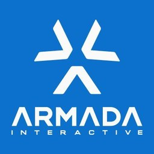

How I work
Most companies have plenty of ideas. The hard part is knowing which ones are worth the money, and organising the business to deliver them. My work follows five stages.
Find the opportunity
Look at the market before spending anything: who the customers are, what they spend, who the competitors are and where demand isn’t being met.
What you get: A clear case for what to pursue and why.
Build the business case
Decide how the idea becomes a business: who it’s for, what it offers, how it makes money and how it reaches customers.
What you get: A strategy and a plan you can act on.
Test before you commit
Use quick, cheap tests (prototypes, market tests, ad tests) to answer the biggest questions before full development starts.
What you get: Evidence, and a clear decision on whether to build.
Build the team and the plan
Put in place the team, roadmap, processes and routines needed to deliver.
What you get: A team structure, an operating plan and a roadmap.
Grow and improve
Connect product data to commercial results, then keep improving retention, revenue and acquisition costs as the evidence comes in.
What you get: A growth system with clear measures and regular decisions.
It isn’t always a straight line. New evidence changes plans, and building something often reveals a better opportunity.
The aim is to be wrong early and cheaply, and to put the money behind what’s working.
Career
Supercell
2013
Joined during the Clash of Clans era.


Grand Cru, Next Games and Armada Interactive
2013–2018
Community, product and growth roles, including work on The Walking Dead: No Man’s Land.



Skunkworks
Founder and CEO, 2019–2022
Founded a mobile games studio, raised €5.8m, grew to 34 people and launched Merge Friends.


Voxelpop
Founder and CEO, 2022–2025
Founded a mobile strategy game company and took Goblin Quest to MVP.

Since 2022
Ventures and product strategy
Dream Space, the founding of Get Lost, and product and growth work outside games.
Working on something new?
Starting a venture, facing a big decision or need senior help to get something moving? Tell me about it.